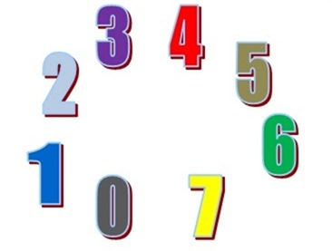

El sistema octal es un sistema numérico de base 8. Utiliza los dígitos del 0 al 7.
Fue usado en informática para representar números binarios de forma más compacta.
Para convertir un número octal a decimal se multiplica cada dígito por una potencia de 8, comenzando desde la derecha.
Ejemplo: Convertir 27 a decimal
2 × 8¹ = 16
7 × 8⁰ = 7
Se suman los resultados:
16 + 7 = 23
Resultado: 23
Para convertir de octal a binario, cada dígito octal se reemplaza por su equivalente en 3 bits.
Ejemplo: Convertir 35 a binario
3 = 011
5 = 101
Se unen los grupos:
011101
Resultado: 11101
Primero se convierte el número octal a binario y después se agrupan los bits de 4 en 4 para pasarlo a hexadecimal.
Ejemplo: Convertir 37 a hexadecimal
3 = 011
7 = 111
Unido:
011111
Se agrupa:
0001 1111
Conversión:
0001 = 1
1111 = F
Resultado: 1F

| Decimal | Octal |
|---|---|
| 8 | 10 |
| 10 | 12 |
| 15 | 17 |
| 20 | 24 |
Escribe un número octal:
Decimal: -
Binario: -
Hexadecimal: -